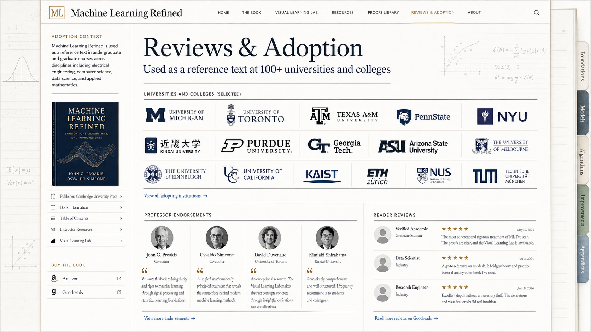

Machine Learning Refined
Reviews & Adoption
Adoption context, institution proof library, professor endorsements, and reader reviews

Machine Learning Refined
Adoption context, institution proof library, professor endorsements, and reader reviews
